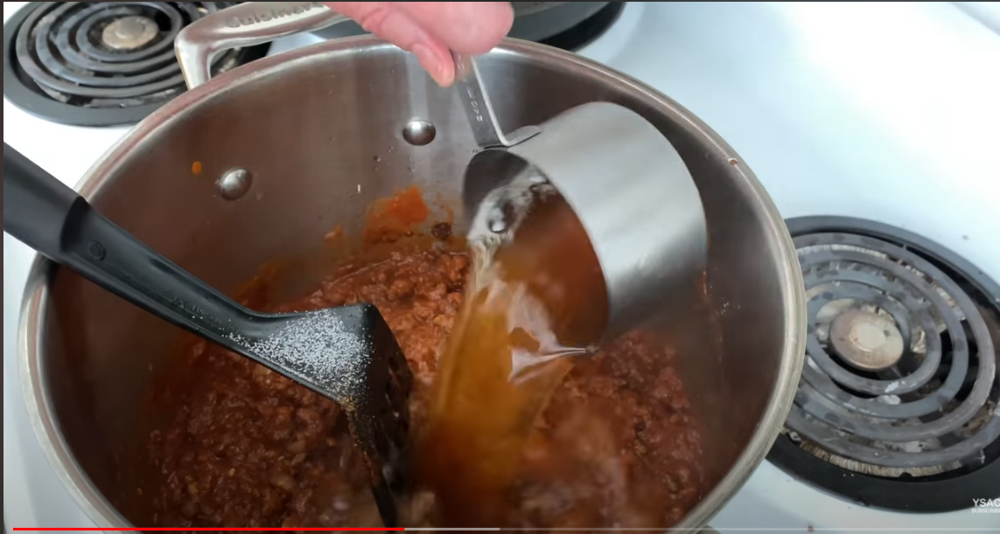
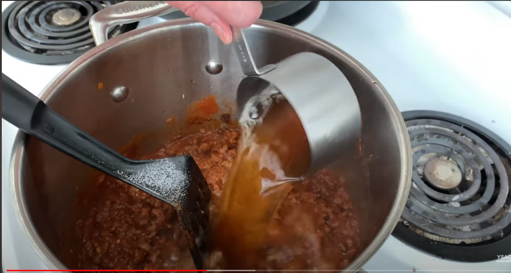

If your chili is too thin, just let it cook longer
If your chili is bland, a pinch of worcestershire sauce or soy sauce helps contribute umami
Brown around two pounds of beef by putting your skillet on medium high with a teaspoon of oil which you may not need if you beef is more fatty. Break it up in the pan then let it sit until a crust starts to form, then flip and do the same thing again
Dice a large onion and chop it up
Do the same with three cloves of garlic
Heat your chili pot on medium with some olive oil then sauté the onion until it starts to brown
Throw the garlic in during the last couple of minutes
Then add the beef with a teaspoon of salt and break it up more
Add in 28oz/790g crushed tomatoes
2 tablespoon chili powder
1 tablespoon cumin
1 to 1.5 cups beef broth…adjust as necessary
½ tablespoon of brown sugar
15.5oz/439g kidney beans
Dice a large onion and chop it up
Do the same with three cloves of garlic
Heat your chili pot on medium with some olive oil then sauté the onion until it starts to brown
Throw the garlic in during the last couple of minutes
Then add the beef with a teaspoon of salt and break it up more
Add in 28oz/790g crushed tomatoes
2 tablespoon chili powder
1 tablespoon cumin
1 to 1.5 cups beef broth…adjust as necessary
½ tablespoon of brown sugar
15.5oz/439g kidney beans

Broccoli concept Sorry this is just proof of concept but if I had more time I'd put more info
broccoli tips Sorry this is just proof of concept but if I had more time I'd put more info

Fried Rice. Sorry this is just proof of concept but if I had more time I'd put more info
Fried Rice. Sorry this is just proof of concept but if I had more time I'd put more info